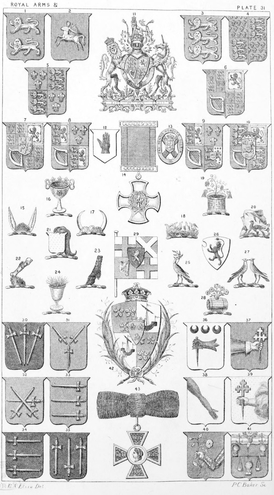

Plate 31.

Plate 31.
- House of Normandy : William I., 1066. William II., 1087. Henry I.,
1100
- Stephen, 1135. The shield is also
described as Gu. three Sagittarii
reguardant in pale or.
- House of Plantagenet: Hen. II., 1154. Richard I., 1 189. John, 1199.
Hen. III., 1216. Edw. I., 1272.
Edw. II., 1307
(The same for Edw. III., until
1340. After this date as No. 4.)
- Edward III., 1327. Richard II., 1377
House of Lancaster : Hen. IV.,
1399.
- Henry V., 1413. Henry VI., 1422
House of York : Edw. IV., 1461.
Edw. V., proclaimed King 1483,
never crowned. Richard III., 1483
House of Tudor : Hen. VII., 1485.
Hen. VIII., 1509. Edw. VI., 1547.
Mary I., 1553. Elizabeth, 1558
- House of Stuart: James I., 1603.
Charles I., 1625. (Commonwealth
declared May 19, 1649, Ensign No.
29). Charles II., 1660. James II., 1685
-
William III. and Mary II., 1689
- Anne, 1702, as No. 6, before the
Union with Scotland. After the
Union, May i, 1707, as No. 8
- House of Hanover (Guelph) Geo.
I., 1714. Geo. II., 1727. The same
for Geo. III., until Jan. 1, 1801,
after this date as No. 10
- George III., 1760
The Escutcheon en surtout is ensigned with the Electoral bonnet ;
but since June 8, 1816, when the
Electorate of Hanover was elevated
to the rank of a Kingdom, the
Hanoverian regal crown as P. 25,
f. 25 was substituted for the Electorate bonnet. George IV., 1820.
William IV., 1830
- Victoria, 1837
- Badge of Ulster. The Baronet's
Badge
- Badge of Nova-Scotia, or Scotch
Baronets
- Badge and ribbon of the Distinguished Service Order. The
ribbon is red, edged blue
- Scalp of a hare, ears erect ppr.
Crest of Dymock
- A Drinking-cup or, with three fleur-de-lis of the same issuing therefrom,
and charged with a rose gu. This
is also termed a flower-pot. Crest
of Croker
- Bull's scalp or., horned ar. Crest
of Cheney
- A nest of young ravens ppr. Crest
of Drummond, Knevet, etc.
- Out of a well or., a vine and two
columbine branches ppr. Goldwell
- A Cornish chough hatching in the
face of a rock ppr. Cornwall
- A Lion's gamb. erased erect gu.
supporting a shield or. Watts
- A Bull's leg, embowed couped at the
thigh erm. hoof upwards. Vachell
- An Ox's foot couped sa. Delafield
- A cup or., inflamed ppr. Lucas
- A Dove reguardant with olive branch
all ppr. Crest of Wiggett, of Guist
- Ar. a Lion ramp, sa., Queve Renowned, i.e. the tail raised over
the head. Buxton
- Two Doves billing, or respecting
ppr. Couran
- A Tun or., issuing from the bung
hole five roses of the same, stalked
and leaved ppr. Cervington
- The Banner of the Commonwealth
containing the Cross of St. George
for England. St. Andrew's Cross
for Scotland, and the Harp for
Ireland, with the Arms of Cromwell Sur-le-tout, viz. : sa. a Lion
ramp. ar.
- Sa. three swords in pile, points downwards ar. hilted and pommelled
or. Paulet
- Gu. three swords in pairle pommels
conjoined in fesse point ar. This
may be blazoned gu. three swords
conjoined at the pommels in centre
their points extended to the corners
of the Escutcheon. Stapleton
- Az. three swords one in fesse point
to the dexter, surmounted of the
other two in saltire points upwards
ar. Ewart
- Gu. three swords barwise in pale.
their points towards the dexter,
hilted and pommelled or. Chute
- Gu. three swords barwise in pale,
points to the sinister hilts and
pommels or. Rawlyns
- Sa. three swords paleways ar. two
with their points in base, and the
middle one in chief. Rawlings.
At P. 9, f. 21. Az. three swords,
one in pale point upwards, surmounted of the other two in saltire
points downwards ar., hilts and
pommels or, Norton, of Toft wood,
E. Dereham, Norfolk, and Rickinghall, Suffolk
- Ar. a dexter hand erased fesseways
gu., holding a dagger point down-
wards az. in chief three crescents
sa. M'Clure
- Gu. issuing from the dexter side of
the shield a cubit sinister arm
vested az., cuffed or, in the hand
ppr. a cross-crosslet fitchee in
pale of the third. O'Donell
- Ar. an arm sinister in bend issuing
from dexter chief point gu. Cornhill
- Or. a dexter arm issuing from the
sinister fesse point out of clouds
ppr. in the hand a cross crosslet
fitchée in pale az. Mac Donnell
- Az. an armed arm embowed or,
issuing from the sinister, holding
in the hand ppr. a rose gu. stalked
and leaved vert, Chambre
- Gu, a balance betw. three garbs or.,
on a chief barry wavy of four ar.
and az., an arm embowed vested
of the first cuff gold, issuing from
clouds affixed to the upper part of
the centre of the chief of the third,
radiated of the second, betw. two
anchors, also of the second. The
Bakers' Company
- The Shield of the Duke of Abercorn.
Quarterly ist and 4th gu., three
cinquefoils pierced erm. for Hamilton. 2nd and 3rd, ar. a lymphad
with sails furled and oars sa. for
Earls of Arran. En surcoat an
inescutcheon az. charged with three
fleur-de-lis or, surmounted by a
French ducal coronet, for the
Duchy of Chatelherault. See also
term Entoured
- The Decoration of the Royal Red
Cross